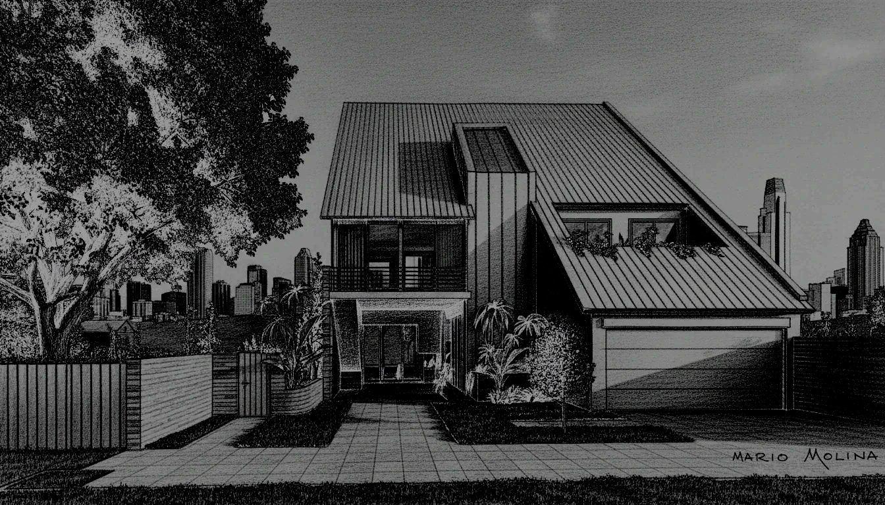
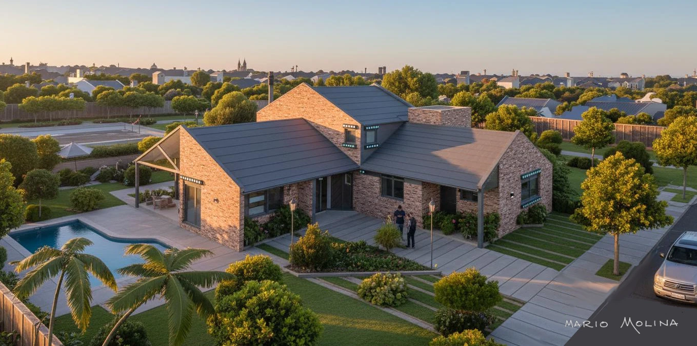
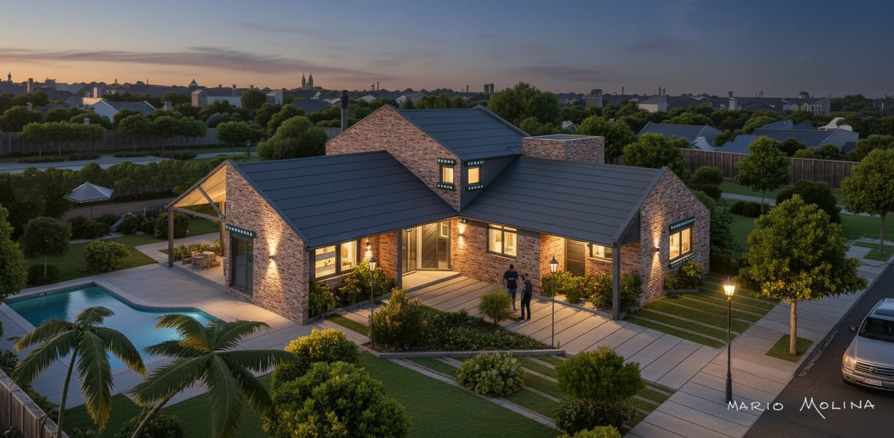
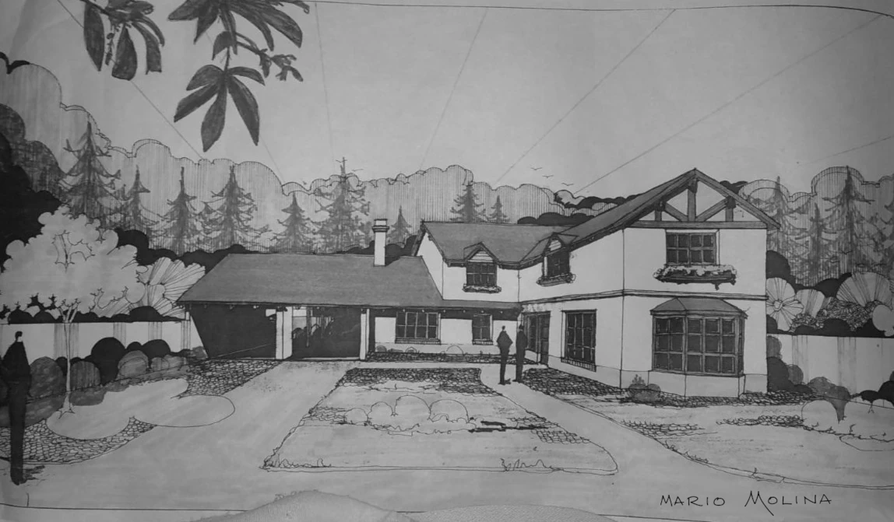
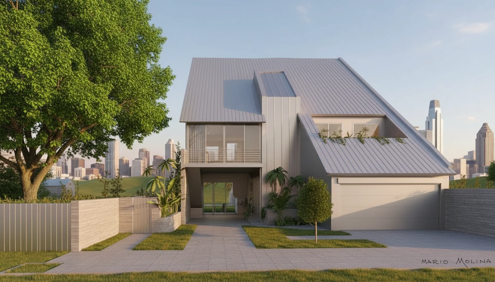
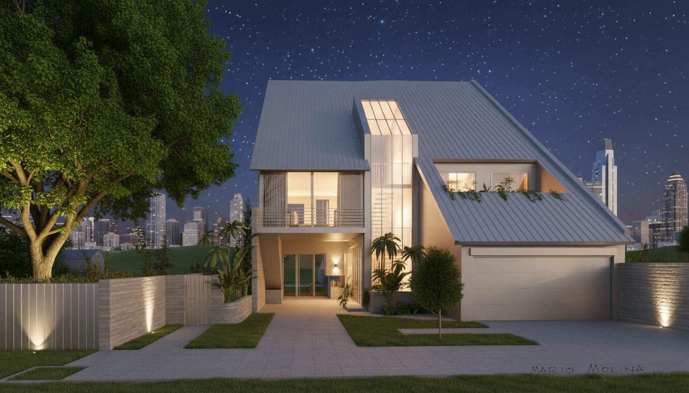
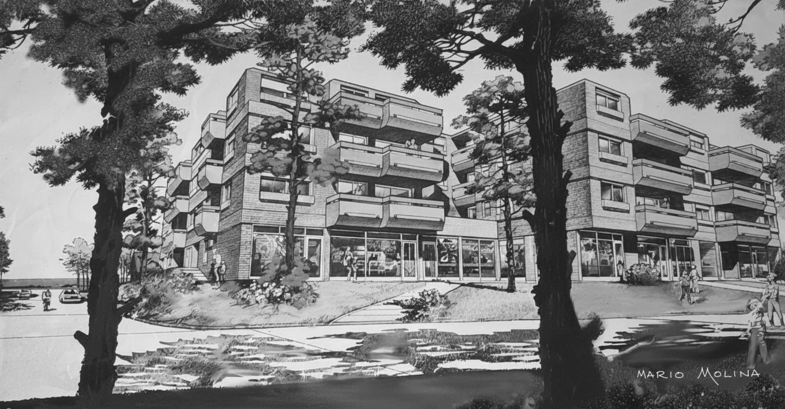
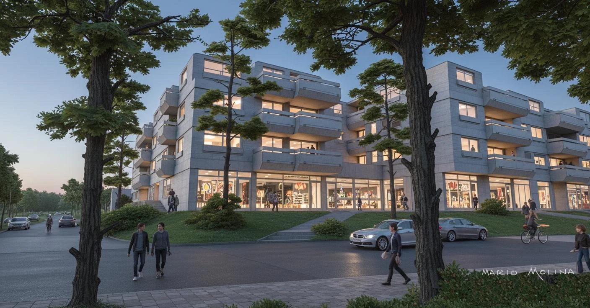

Proyectos
🏠Proyectos Residenciales
Diseño de viviendas unifamiliares en la provincia de Buenos Aires. Cada proyecto se aborda con un enfoque personalizado que integra las necesidades del cliente, las condiciones del terreno y las normativas locales.

🏢Proyectos Comerciales
El diseño de un inmueble de uso mixto en Punta del Este, Uruguay, que incorpora componentes residenciales, comerciales y de oficinas. Los proyectos comerciales requieren un análisis exhaustivo de los flujos de circulación, la accesibilidad, la imagen corporativa y la viabilidad económica.

🏭Proyectos Industriales
Contamos con experiencia en el diseño de naves industriales, depósitos logísticos y plantas de producción. Estos proyectos fueron desarrollados para empresas líderes del sector tecnológico argentino e internacional.
- Arcor — Obra civil de naves industriales e infraestructuras, Grupo ARCOR, San Luis.
- Philips — Diseño de áreas logísticas.
- Whirlpool — Rediseño de espacios de manufactura y depósitos.
- Philco — Gerenciamiento integral de plantas de producción (2002–2010).
- Daewoo / Newsan / Midas — Reconversión y adecuación de naves industriales.
🌎Proyectos Internacionales
La vinculación con empresas globales permitió participar en proyectos en Brasil, Chile, China y Corea del Sur, aportando experiencia en diseño industrial, adecuación de plantas y transferencia tecnológica.
- Brasil — Asesoría en diseño de instalaciones de naves industriales.
- Chile — Evaluación y diseño de centros logísticos.
- China — Evaluación y diseño de depósitos y naves industriales con estándares internacionales.
- Corea del Sur — Transferencia tecnológica y adaptación de diseños para el mercado asiático.
- Uruguay — Proyecto residencial y comercial en Punta del Este.
🖼️Visualización Arquitectónica de Autor
Visualización que fusiona la sensibilidad del trazo manual con el renderizado digital. Un flujo de trabajo diferenciado en tres etapas:



🖼️Proyecto Casa Martinez (120 m2), San Isidro (BA)
Sistema mixto de dibujo a mano (Ilustración Arquitectónica) y la potencia del renderizado digital.
🖼️Proyecto Casa Dufaur (160 m2), San Isidro (BA)
Sistema mixto de dibujo a mano (Ilustración Arquitectónica) y la potencia del renderizado digital.



🖼️Proyecto Casa Ayacucho (150 m2), San Isidro (BA)
Sistema mixto de dibujo a mano (Ilustración Arquitectónica) y la potencia del renderizado digital.


🖼️Edificio multifamiliar y comercial (6000 m2) - Punta del Este, Uruguay
Sistema mixto de dibujo a mano (Ilustración Arquitectónica) y la potencia del renderizado digital.

